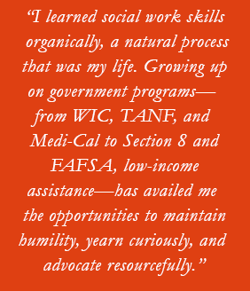

Tech Tran Acquired His Social Work Skills Organically on His Family’s Challenging Journey
Granted Guardianship with His Mother of His Young Niece and Nephews, He Became the Family Case Manager at Age 18
Tech Tran can trace his path to becoming a mental health social worker to his own family’s challenging experiences and his “desire to give back to families and communities that suffer from poverty, mental illness, racism, and oppression.”
Throughout his family’s tumultuous journey—from post-war Vietnam to California 33 years ago—Tech says the one constant has been his mother’s “overwhelmingly positive, caring, and compassionate spirit to overcome adversity, all while continuing to help others through her volunteerism and affiliation with the senior population and faith-based communities.”
It is this spirit that he emulates in his work as Case Management Program Director of the Rainbow Community Center of Contra Costa County in a field where, it seems, he was born to succeed.
RELATED: Read stories about other CalSWEC alumni
Escaping Vietnam at age 3, Tech along with his family landed in San Francisco’s Tenderloin. One year later, his parents divorced. From there, his story is punctuated by homelessness and continual moves—around San Francisco, to San Jose, to Oakland, to Southern California—with his mother and his sister, until she left home for a life on her own that was to include, along the way, four children.
Struggles Lead to a Calling
But, more significantly, Tech’s story is one of resilience and evolution. “I learned social work skills organically, a natural process that was my life,” he says. “Growing up on government programs—from WIC, TANF, and Medi-Cal to Section 8 and FAFSA, low-income assistance—has availed me the opportunities to maintain humility, yearn curiously, and advocate resourcefully.”
He continues, “I truly began to utilize the techniques of brokering, linking, and interpreting when I turned 18.” During “a major manic episode,” his sister decided to leave her children and move to Las Vegas. It was then that he and his mother were granted guardianship of his sister’s four children, “and I was challenged with the role of family case manager,” says Tech. Over the years, he says they have heard from his sister fewer than five times and discovered that she has had two more children. Sadly, he says, her whereabouts are still unknown.
“In a storm of obstacles that stemmed from personal experiences,” he says, “I was called to the profession of social work.”
Today, his niece and three nephews are young adults, with the youngest graduating from high school this summer. Two nephews still live with Tech and his mother in the East Bay.
MHP Results in a Rewarding Career
A graduate of CalSWEC’s Mental Health Program (MHP) at CSU, East Bay, Tech says, “My experience and involvement in the MHP has been a fruitful and most beneficial relationship. There have been so many positives that have helped me grow both educationally and professionally."
RELATED: Read more about Tech Tran
He attributes his success to that experience. “As a CalSWEC scholarship recipient, I had a voice and was able to share mental health concerns from a social work perspective and was able to make changes immediately.
“My career has been rewarding. The unique characteristics, specialized interventions, and all-inclusive assessments that epitomize our profession have paved many roads. I am proud of my current position as the Case Management Program Director of the Rainbow Community Center of Contra Costa County. I began as a first-year intern; now this role allows me to make instrumental change in many forms.
In that position, he says, “I have the honor of serving a community that is highly resilient: the LGBTQ community, more specifically those that are living with severe and persistent mental illness, diagnosed HIV+, recovering from substance use, or in need of legal/gender marker/name change support. I also began field instruction and lecturing for the Social Work Department at CSU, East Bay in 2015.”
Tech adds, “Being a CalSWEC recipient has also afforded me the resources to take additional courses to advance my scope into school-based settings, providing mental health services in K-12 schools, and earning my PPS credential."
Oppression Is the Challenge Facing the Field
From his perspective, Tech says, “The most significant challenge in working in the mental health field is still oppression. Living with mental illness, especially untreated, is detrimental to the quality of life for any person.
“If we intersect that experience with being a sexual minority and/or person of color and/or living with chronic conditions and with societal/cultural stigma, we find a system that is slow to shift with emerging trends in cultural and ethical ways of professionally conducting business,” he says. “Thus, it makes it extremely daunting and difficult for those that are suffering to relieve themselves and their communities of downtrodden spirits.”